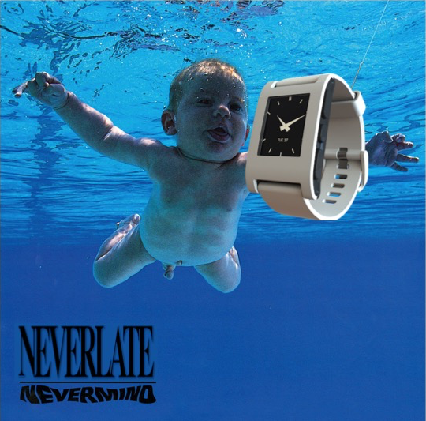

Nevermind! NeverLate has the right solution for you. NeverLate is a simple and versatile wrist-watch that notifies if you are late, so that you'll never miss a lecture! Look on our web page to have more informations!
The Project
NeverLate is a smartwatch that, as a main feature, has to notify the user when he has to head out to his next lesson.
The system will calculate the right time for the notifications according to:
- user position inside the campus
- user lecture schedule (time and place)
- estimated time to reach the destination, obtained by collecting and processing data from all the user of NeverLate
- professor notification during breaks or schedule updates (see later on to know what the system is able to do from the professor side)
- personal user settings
Furthermore, if the user wants to know how much time he has left before he has to move, he can tap the smartwatch screen to show this information. He can also disable next notification with another double tap.Extended interface to set up and/or customize the service will be provided as a simple website.
Additional tools are available in a "professor" version of NeverLate. The professor will be also able to "ping" his students when he's planning to start the lecture (now, in 5 minutes... ) just with the smartwatch. Moreover, in the extended interface, he can also modify temporarily his lecture schedule and the system will automatically adapt students notifications according to it.
The Project
NeverLate is a smartwatch that, as a main feature, has to notify the user when he has to head out to his next lesson.
The system will calculate the right time for the notifications according to:
- user position inside the campus
- user lecture schedule (time and place)
- estimated time to reach the destination, obtained by collecting and processing data from all the user of NeverLate
- professor notification during breaks or schedule updates (see later on to know what the system is able to do from the professor side)
- personal user settings
Furthermore, if the user wants to know how much time he has left before he has to move, he can tap the smartwatch screen to show this information. He can also disable next notification with another double tap.Extended interface to set up and/or customize the service will be provided as a simple website.
Additional tools are available in a "professor" version of NeverLate. The professor will be also able to "ping" his students when he's planning to start the lecture (now, in 5 minutes... ) just with the smartwatch. Moreover, in the extended interface, he can also modify temporarily his lecture schedule and the system will automatically adapt students notifications according to it.
News
Progress Bar
Our project is not complete this is our progress bar:
Contact Us
Riccardo Mereu
mail:riccardo.mereu@studenti.polito.it
github:SuMereMereu
Nicola Prette
mail:nicola.prette@studenti.polito.it
github:GrizzlyMan
Federico Barusso
mail:federico.barusso@studenti.polito.it
github:FEDE9326
Lorenzo Miretti
mail:lorenzo.miretti@studenti.polito.it
github:Firebird1993